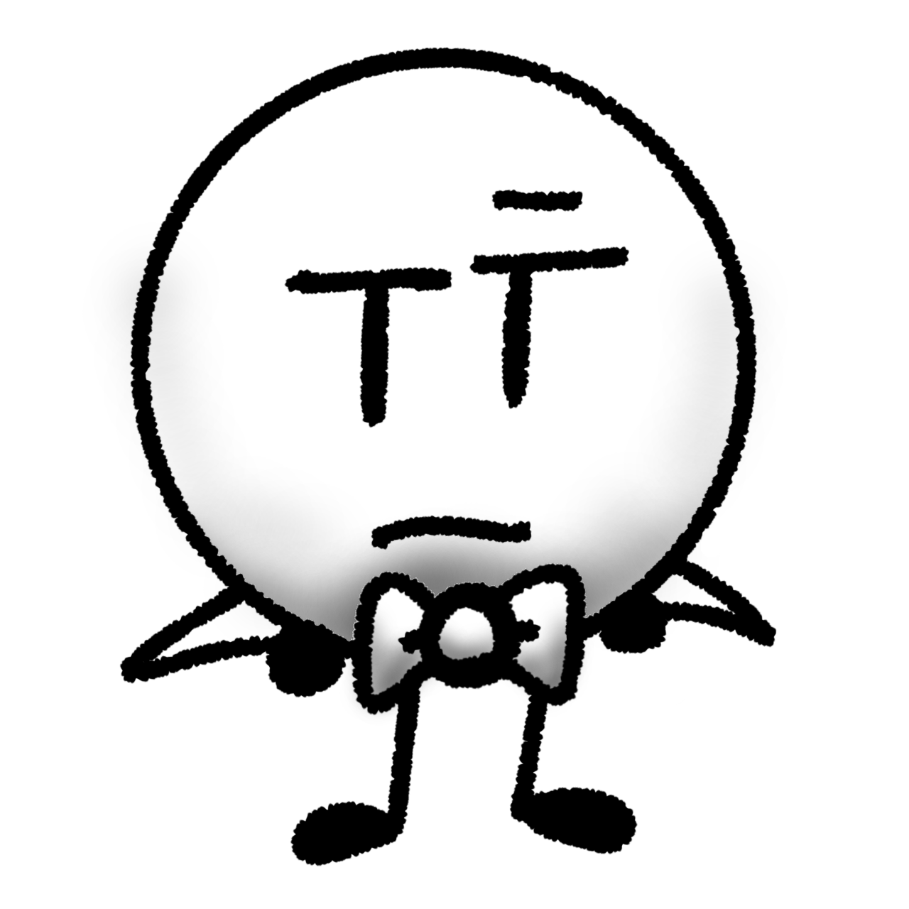
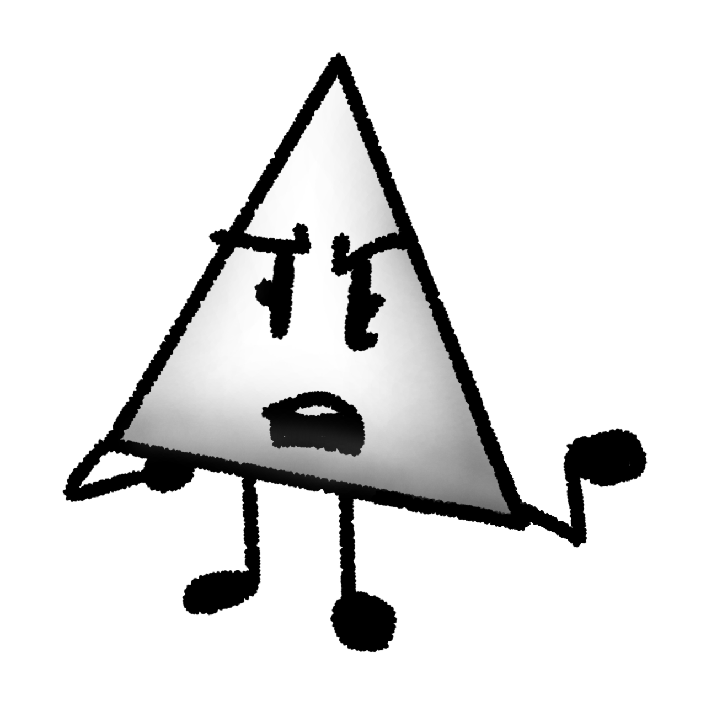
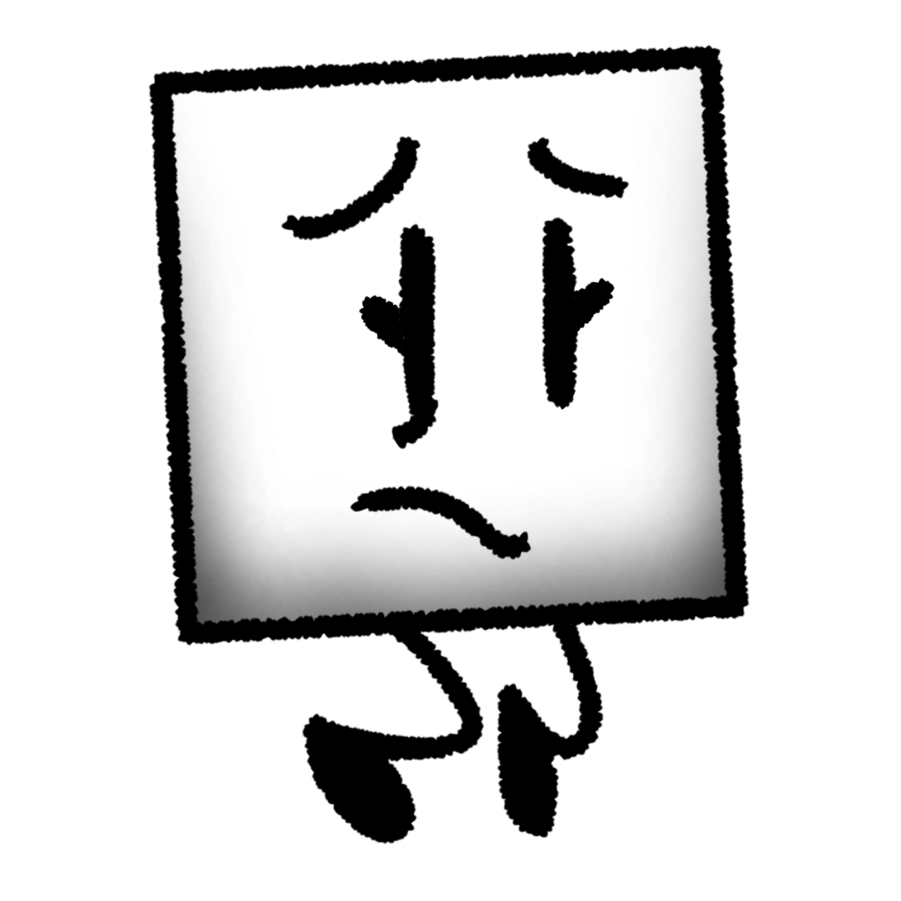
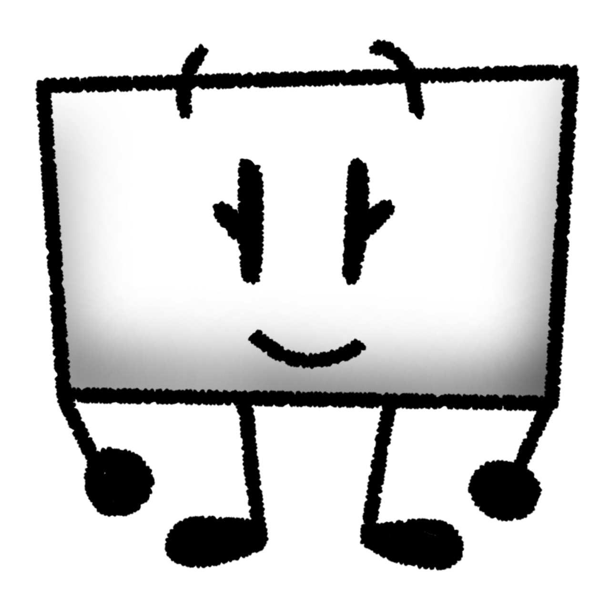
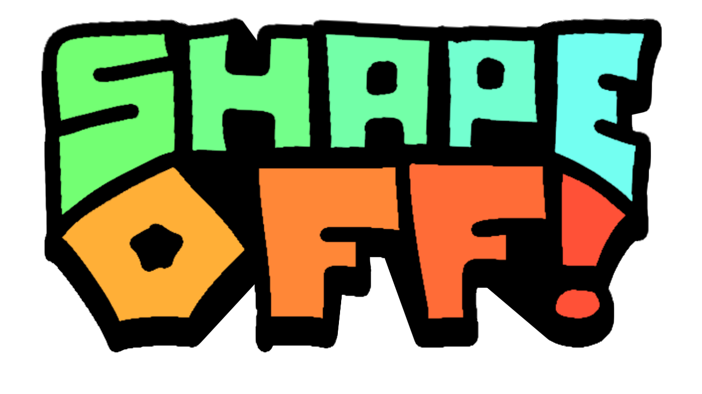
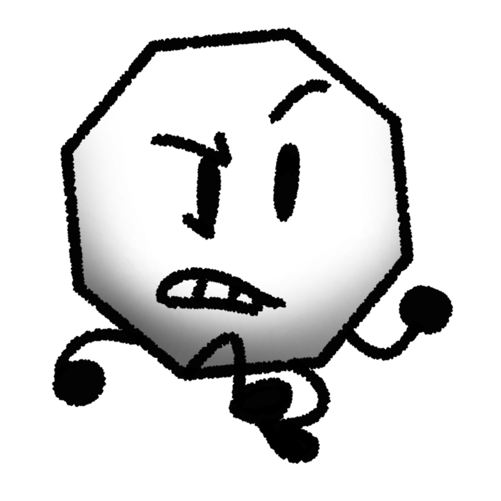
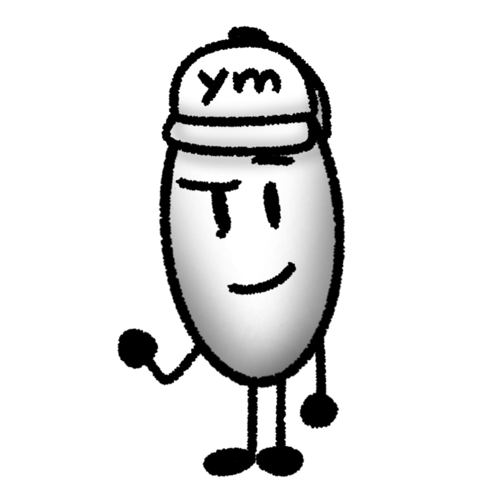

⚠️ SPOILER WARNING ⚠️
Shapeoff Character Bios
Explore the cast of Shapeoff — who they are, what they want, and the secrets they hide.
🛠️ This page is a work in progress! 🛠️
Contestants

Circle
Teacher

Triangle
Misfortunate

Square
Whisper

Rectangle
Peppy

Hexagon
Anarchy

Octagon
Snark

Oval
Somber
Pentagon
Keen
Rhombus
Testy
Trapezoid
Cryptic
Nonagon
Mediator
Non-Contestants
Host
Enigma
Sphere
Heir
Decagon
Genie
Heart
Nurse
Cross
Doctor
Table Soldier
Guard
Minor Characters / Not Enough Information
"Unknown"
Regent
McCircle's Worker
Worker
McCircle's Manager
Manager
Papa Polygon's Worker
Worker
Five Shapes Worker
Worker
Hexagon's Father
Loving
Hexagon's Mother
Caring
Alleyway Shape
Vendor
Evil Circle
Tyrant
Evil Triangle
Tyrant
Evil Square
Tyrant
×